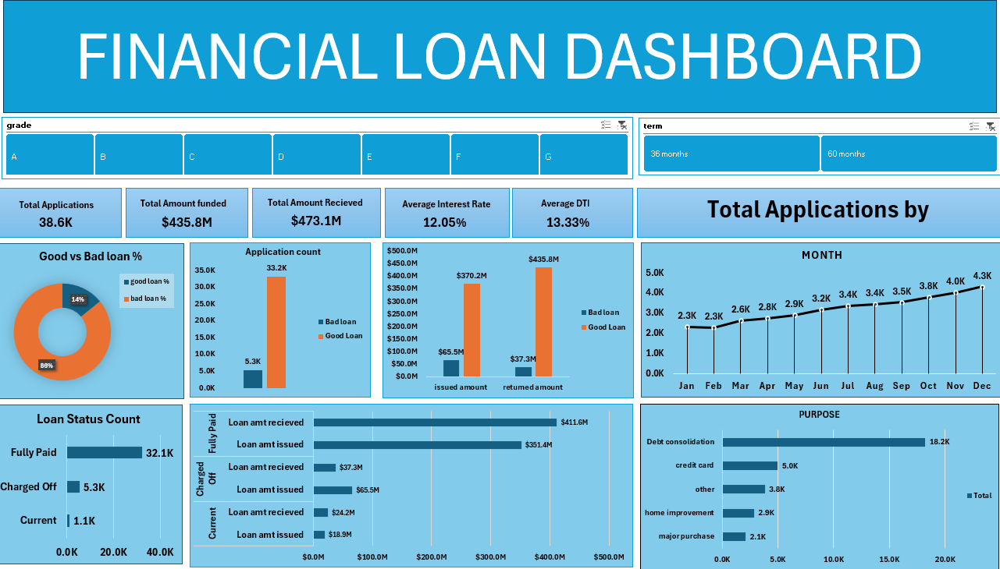
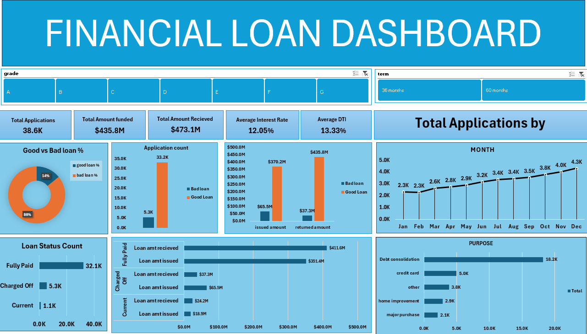
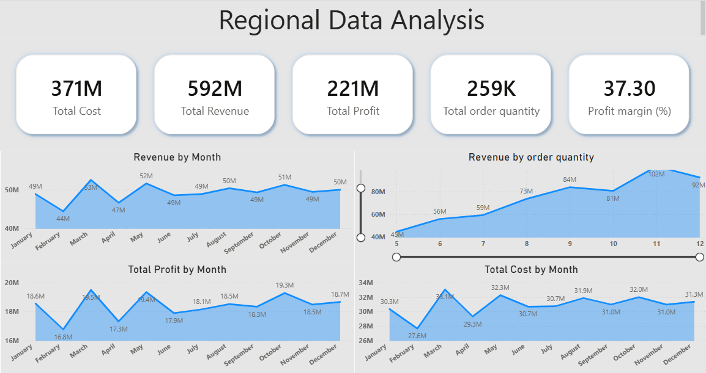

End-to-end Vendor & Inventory Analysis using Python, SQLite, Jupyter and powerBI. The project concludes with a comprehensive report containing actionable insights.
.
 

Developed an interactive Bank Loan Analysis Dashboard using Excel and SQL to track lending performance, analyze borrower risk (Good vs. Bad loans), and generate data-driven insights for portfolio management.

A data-driven analysis of 2024 regional sales performance across the US. Featuring Python data processing and an interactive Power BI dashboard to identify high-margin products and growth opportunities.

This project performs a high-level statistical evaluation of 365 days of marketing data (2025) to compare the efficiency of Facebook Ads vs. Google AdWords. Using predictive modeling and hypothesis testing, the goal is to identify which platform delivers superior ROI and provide data-driven recommendations for budget reallocation.
.